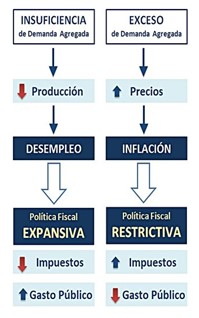
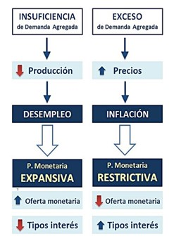

|
|
Paradigmas o enfoque de la política económicA2
| ||
|
La política fiscal es el conjunto de medidas e instrumentos que utiliza el Estado para la obtención de ingresos (principalmente, mediante la recaudación de impuestos) y la aplicación del gasto público, con el fin de obtener un crecimiento de la producción, reducir el desempleo y alcanzar la estabilidad de precios. De manera general, se refiere al gasto y a los esquemas impositivos del gobierno. (Case & Fair, 2008). Mediante la aplicación de la política fiscal, el Estado tratará de influir en la economía del país, controlando el gasto y los ingresos de los diferentes sectores y mercados con el objetivo de alcanzar su política económica. Mientras que el gasto público, comprende todos aquellos gastos que realiza el sector público de un país a lo largo de un año, para desarrollar su función económica. Los ingresos públicos son los recursos que el Estado y otros entes públicos obtienen para financiar los gastos públicos. Existen dos tipos de política fiscal:  Política fiscal expansiva: Se aplica cuando la cantidad de productos que se
demandan es inferior a la que se ofrece, disminuyen las ventas y, por lo tanto, baja la producción,
con lo que se pierden puestos de trabajo y se genera desempleo. Entonces el gobierno para mitigar el
fenómeno de desempleo, disminuye la carga impositiva y con ello incrementa el gasto público. |
|
La Política Monetaria es el conjunto de decisiones que toma la autoridad monetaria de cada país, respecto a la fijación del tipo de interés y el control de la cantidad de dinero en circulación (oferta monetaria), con el fin de facilitar el crecimiento económico, reducir el desempleo y alcanzar la estabilidad de precios. La oferta monetaria
de un país debe ser justamente la que su economía necesite para que funcione adecuadamente en ese
momento, ya que de lo contrario se generarían desajustes y desequilibrios económicos, dando lugar a
escenarios de inflación o desempleo.
|
reflexión final5
|
Elizalde Angeles, E. N. (2012). Macroecnomía. Red Tercer Milenio.
BCH. (s.f.). Índice de Precios al Consumidor .Conceptualización y características metodológicas. Tegucigalpa. Obtenido de https://www.bch.hn/download/ipc_historico/IPC1999.pdf
Beker, V., & Monchon, F. (2001). Economía elementos de micro y macroeconomía . Mc Graw Hill.
Case, K.E. y Fair, R.C. (2018). Principios de macroeconomía (8ª ed.). Pearson Educación.
http://ru.economia.unam.mx/169/1/Principios%20de%20macroeconom%C3%ADa%20-%20Case%20%26%20Fire%20-%208ed.pdfDerechoUNED. (14 de Marzo de 2019). DerechoUNED. Obtenido de https://derechouned.com/tributario/economia/8627-definicion-de-mercado-competitivo.
elEconomista.es. (s.f.). Diccionario de economía. Obtenido de https://www.eleconomista.es/diccionario-de-economia/inflacion#:~:text=Definici%C3%B3n%20de%20Inflaci%C3%B3n,adquieren%20menos%20bienes%20y%20servicios
Salmeron, A. M. (10 de Mayo de 2016). CaixaBank. Recuperado el 8 de Febrero de 2021, de https://www.caixabankresearch.com/es/economia-y-mercados/mercados-financieros/breve-historia-inflacion-como-fenomeno-monetario
Universidad Nacional Autónoma de Honduras
Vicerrectoría Académica
Dirección del Sistema de Estudios de Posgrados
Dirección de Innovación Educativa
Entidad Desarrolladora del curso de “Economía”
Dr. Armando Euceda
Director DSEP
Dra. Martha Leticia Quintanilla
Directora DIE
MSc Soria Ramos
Expertos en contenidos
DSEP
Diseñador Instruccional
Ruth Gámez
Corrección de Estilo
Karina Carías
Producción Digital
Carlos José Pérez Sánchez
Programador Web